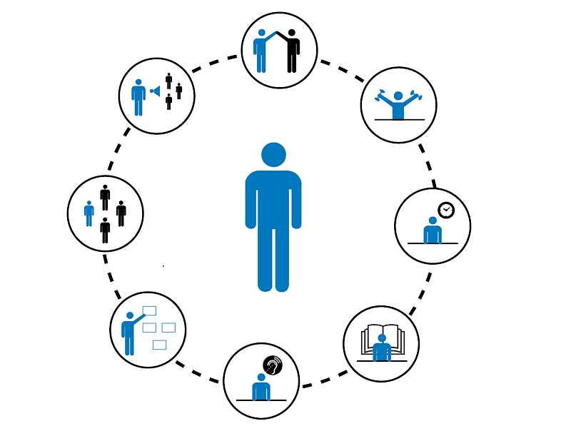

Welcome To My Skills and Hobbies Page

● Full UK Driving License
● Completed PRINCE 2, Project management course, April 2018.
● Prison Link 10-week course, 2015
● Frontrunner common purpose course, 2015
ACTIVITIES
● New Bridge befriending service – volunteer
Writing letters and visiting someone within prison. This
is a supportive befriending role.
●BCU Student academic leader (SAL)
Collect feedback from students and report back to staff
to improve university.
● Food cycle volunteer
Using creative ideas to turn surplus food into a
3-course meal for the local community.
● Stop and Search scrutiny panel member
Analysing random samples data, to conclude whether
it was justified and legal. Providing critical feedback
for those that need improvement.
● Police Cadets – Leader | 2015 - Present
policing for young people, hosting various sessions
with a wide range topics/themes/activities.
● Haddenham Girl Guides
I volunteered at Haddenham Girl Guides. I assisted
the girls who were aged from 10-14 with varies tasks.
This included cooking, arts and crafts, and
advising/participating in general discussion.
● Health Care Assistant
Worked on serval different outpatient wards working as
a health care assistant. I methodically monitored,
took samples, tested it and correctly recorded the
information electronically.
● Parish Councillor – Haddenham Parish - 2019